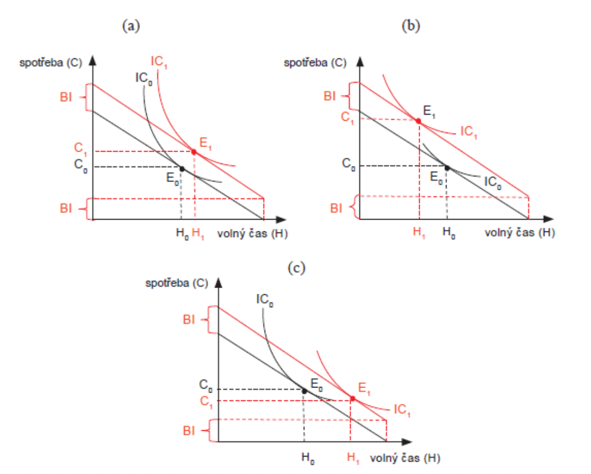
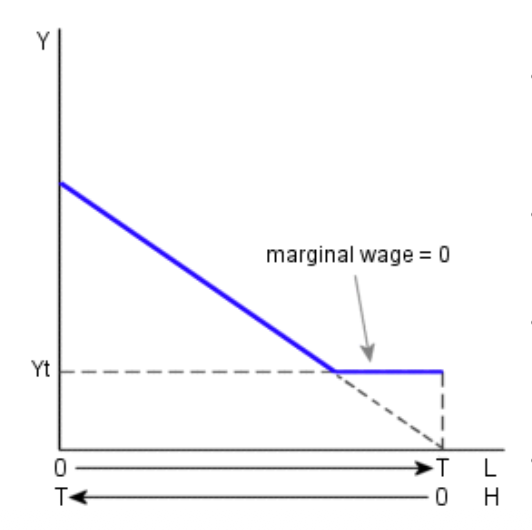
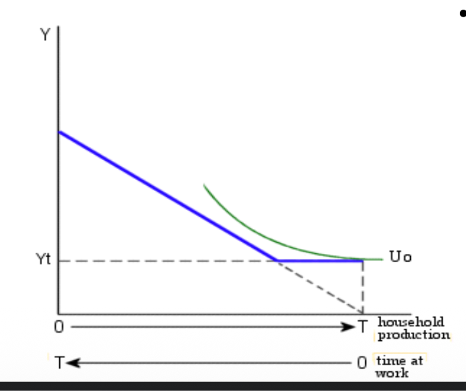
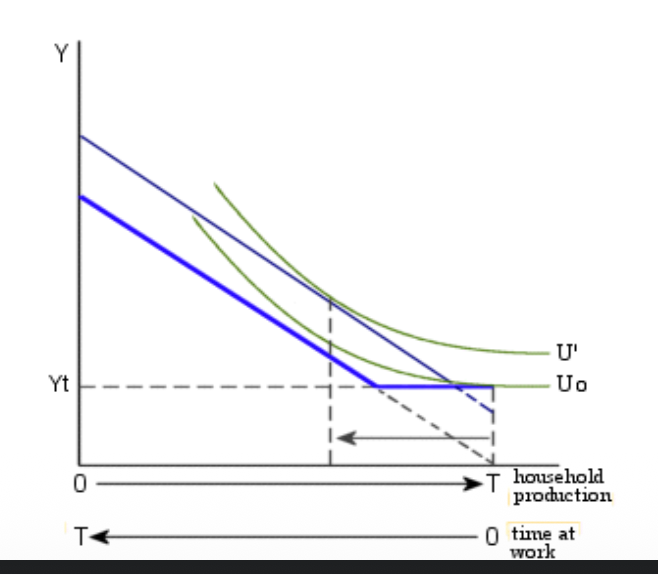

Neoclassical Model of Labour Supply
⏱️ I. The Basic Neoclassical Model
Core Assumptions
In the Neoclassical framework, individuals are rational decision-makers who face a fundamental trade-off between Labour (earning money for consumption) and Leisure (non-market time).
- Fixed Total Time ($T$): Usually set to 16 hours/day (excluding sleep). Any time not spent working is defined as leisure.
- Utility Maximization: Individuals derive satisfaction from both consuming goods ($C$) and enjoying leisure ($L$). They maximize $U = f(C, L)$.

Figure 1: The starting allocation of time.
1. Demand for Leisure
Leisure is modeled as a normal good. This means several things:
- Preferences: Some value time more than others (subjective weight in utility).
- Wealth Effect: If an individual becomes wealthier (higher non-labour income), they will naturally want to "buy" more leisure and work less.
- Opportunity Cost: The price of an hour of leisure is the wage rate ($W$) you could have earned.
🧠 II. Preferences and Utility Curves
Indifference Curves
An Indifference Curve ($IC$) shows all combinations of Income and Leisure that provide the same utility. Its slope is the Marginal Rate of Substitution (MRS).
The MRS tells us how much income an individual is willing to give up to gain one extra hour of leisure while staying equally happy.

Figure 2: Steep curves indicate a 'Leisure Lover', flat curves indicate a 'Workaholic'.
📉 III. Budget Constraints & Optimization
The individual is limited by their Total Time and their Total Income.
Algebraic Constraint
If $V$ is non-labour income:
Or refined as:

Allocation of T across H and L.

Slope = $-W$ (the real wage).
The Tangency Point
Maximum satisfaction occurs where the budget line is tangent to the highest possible IC. At this point:

⚖️ IV. Substitution and Income Effects
When the wage ($W$) increases, the budget line becomes steeper. This creates two conflicting forces.
1. Substitution Effect (SE)
Work is now more rewarding. Leisure is more expensive. The individual swaps leisure for work.

Result: $H \uparrow$ (Work more).
2. Income Effect (IE)
You are richer for the same hours. You want to enjoy life more. You buy more leisure.

Result: $H \downarrow$ (Work less).
The Observed Change
Total Effect = SE + IE. We only see the net result on the market.


If $SE > IE$, hours increase.

If $IE > SE$, hours decrease.
📈 V. The Backward-Bending Supply Curve
Empirical evidence suggests that at low wages, the SE dominates (people want to work more for a raise). At very high wages, the IE takes over (people prefer time off over more money).


🏃 VI. The Decision to Work (Participation)
Not everyone works. This is explained by the Reservation Wage ($W_R$).
Reservation Wage ($W_R$)
The value of the "first hour" of work. If the market wage ($W_M$) is lower than $W_R$, the person stays home.
Corner Solutions
When the best utility is found at $H=0$ (zero work).


💰 VII. Non-Labour Income ($V$)
An increase in lottery winnings or inheritance shifts the budget constraint upwards without changing the slope.


Result: Since leisure is normal, work hours $H$ will always decrease. There is no Substitution Effect here because the wage hasn't changed.
⚖️ VIII. Welfare Programs & Incentives
The Welfare Trapezoid
Traditional welfare guarantees an income $Y_t$. For every dollar earned, benefits are reduced by one dollar. This makes the Effective Wage = 0.


Work hours drop drastically.

Many exit the labor force entirely.

Better Alternatives?
Workfare
Mandatory work hours to get benefits. Changes the constraint by removing the $H=0$ utility point.

Unconditional Basic Income (UBI)
Pure non-labour shift. No "marginal tax" on work, but reservation wage rises. Individuals might quit if UBI is high enough.


Other Insurances


🏠 IX. Household Production Model
Families make decisions together. Time is split 3 ways: Market Work, Household Production (cooking/cleaning), and Leisure.

Comparative Advantage: The person with the highest market wage specializes in the market. The person better at home tasks specializes at home. This creates gender division of labour patterns.



🔄 X. Lifecycle and Worker Effects
Lifecycle Wage Profile
Wages rise with experience then fall. Supply follows this: we work most in our prime years.

Market vs Home Time
Specialization shifts as productivity in different sectors changes over a lifetime.

Added vs. Discouraged Worker Effects
- Added Worker: One spouse loses a job $\implies$ The other enters the market to save the family income (Pure IE).
- Discouraged Worker: Jobs are so hard to find $\implies$ Probability of success is zero $\implies$ You quit looking (vicious cycle).
🎓 Final Revision Tip
Always identify the type of shock first. - Wage change? (SE + IE) - Non-labour shift? (Pure IE) - Policy change? Look at the 'Kink' in the budget line!